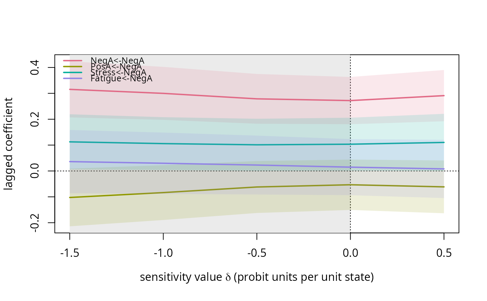

Fits fit_tilt over a grid of sensitivity values and collects
the lagged coefficients, the contemporaneous partial correlations, the
between-person means and (optionally) cluster-robust confidence limits.
Arguments
- data
Long data frame with one row per scheduled prompt.
- vars
Names of the state columns.
- delta_grid
Numeric vector of sensitivity values for the self-censoring variable (the first of
varsunlesswhichsays otherwise).- which
Index (in
vars) of the variable that drives self-censoring.- id, time
Names of the person and prompt-index columns.
- day
Optional name of a day column; pairs are formed only within a day (the overnight gap is not a lag-1 transition).
- R
Optional name of the response-indicator column. If missing, a prompt counts as answered when all
varsare non-missing.- propensity
"common"(one intercept) or"person"(one intercept per person; use when a person-propensity motif M4 is declared together with M2).- level
Confidence level for the limits.
- pairs
Optional precomputed result of
make_pairs.- probe
Optional probe column name passed to
fit_tilt.- min_pairs
Passed to
fit_pairs.
Value
An object of class "tilt_profile": a list with
delta_grid, which, vars, a data frame Phi
(one row per grid value and lagged coefficient, with coef,
estimate, se, lower, upper, z,
p and delta), a data frame pcor (contemporaneous
partial correlations by grid value and edge), a matrix mu
(between-person means by grid value), fits (the list of
fit_tilt objects), level, propensity,
converged and ess (one entry per grid value) and
n_pairs. Methods: print and
plot.
Examples
sim <- simulate_ema(N = 40, T = 30, motifs = "M2", delta = -1, seed = 1)
prof <- tilt_profile(sim$data, sim$vars, delta_grid = c(-1.5, -1, -0.5, 0, 0.5))
prof
#> Tilt profile over delta in { -1.5, -1, -0.5, 0, 0.5 } for NegA
#> Autoregressive coefficient of the self-censoring variable along the grid ( 709 complete pairs):
#> delta estimate lower upper ess converged
#> -1.5 0.315 0.207 0.424 587 TRUE
#> -1.0 0.300 0.197 0.402 662 TRUE
#> -0.5 0.279 0.183 0.375 699 TRUE
#> 0.0 0.272 0.181 0.363 709 TRUE
#> 0.5 0.291 0.192 0.390 688 TRUE
head(prof$Phi)
#> coef estimate se lower upper z
#> 16 Fatigue<-Fatigue 0.30269674 0.05137436 0.1987823 0.40661120 5.8919804
#> 13 Fatigue<-NegA 0.03620804 0.06042640 -0.0860159 0.15843197 0.5992089
#> 14 Fatigue<-PosA -0.14421602 0.04099723 -0.2271407 -0.06129130 -3.5177018
#> 15 Fatigue<-Stress -0.02361651 0.04231078 -0.1091981 0.06196512 -0.5581678
#> 4 NegA<-Fatigue -0.06730765 0.05125879 -0.1709883 0.03637304 -1.3130947
#> 1 NegA<-NegA 0.31539752 0.05357164 0.2070386 0.42375639 5.8873966
#> p delta
#> 16 7.316475e-07 -1.5
#> 13 5.524988e-01 -1.5
#> 14 1.122534e-03 -1.5
#> 15 5.799203e-01 -1.5
#> 4 1.968249e-01 -1.5
#> 1 7.424540e-07 -1.5
prof$mu
#> NegA PosA Stress Fatigue
#> [1,] 2.475511 3.738218 2.902944 3.007834
#> [2,] 2.369494 3.833369 2.848691 2.991113
#> [3,] 2.247611 3.935126 2.786332 2.976697
#> [4,] 2.089641 4.036332 2.697751 2.953323
#> [5,] 1.876792 4.140249 2.570519 2.912625
break_even(prof, delta_max = 1)
#> coef estimate_0 significant_0 sign_flip_delta
#> 1 Fatigue<-Fatigue 0.32003947 TRUE NA
#> 2 Fatigue<-NegA 0.01475191 FALSE NA
#> 3 Fatigue<-PosA -0.10382720 TRUE NA
#> 4 Fatigue<-Stress -0.00630844 FALSE 0.5
#> 5 NegA<-Fatigue -0.04273611 FALSE NA
#> 6 NegA<-NegA 0.27202999 TRUE NA
#> 7 NegA<-PosA -0.04336865 FALSE NA
#> 8 NegA<-Stress 0.21222503 TRUE NA
#> 9 PosA<-Fatigue 0.11721566 TRUE NA
#> 10 PosA<-NegA -0.05327674 FALSE NA
#> 11 PosA<-PosA 0.43526919 TRUE NA
#> 12 PosA<-Stress -0.02393339 FALSE NA
#> 13 Stress<-Fatigue 0.13098561 TRUE NA
#> 14 Stress<-NegA 0.10342712 TRUE NA
#> 15 Stress<-PosA -0.04538176 FALSE NA
#> 16 Stress<-Stress 0.46173006 TRUE NA
#> significance_flip_delta set_lower set_upper band_lower band_upper
#> 1 NA 0.307040198 0.32003947 0.2059476162 0.41859753
#> 2 NA 0.007946694 0.02978227 -0.1046858801 0.14842800
#> 3 NA -0.133116375 -0.09887209 -0.2145342477 -0.01311113
#> 4 NA -0.017306828 0.01357034 -0.1018740059 0.11208303
#> 5 NA -0.057794829 -0.04273611 -0.1480241841 0.04033494
#> 6 NA 0.272029988 0.29988399 0.1807127461 0.40228824
#> 7 NA -0.061535982 -0.02248452 -0.1454695785 0.05635852
#> 8 NA 0.212225030 0.27055030 0.1416975325 0.36314900
#> 9 -1.5 0.113184396 0.12575984 0.0068780914 0.21949070
#> 10 NA -0.083562454 -0.05327674 -0.1894808339 0.04406566
#> 11 NA 0.433224038 0.43638768 0.3386263979 0.52782168
#> 12 NA -0.050280232 -0.02393339 -0.1845678217 0.09543843
#> 13 NA 0.130738024 0.13318246 0.0642775092 0.20192544
#> 14 0.5 0.101125068 0.11028455 -0.0002670581 0.22083617
#> 15 NA -0.048516500 -0.04457373 -0.1026036788 0.00811859
#> 16 NA 0.461730062 0.47363099 0.3694950042 0.55989895
plot(prof, plausible = c(-1.5, 0))
